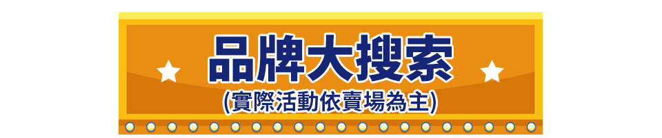

<!DOCTYPE html>
<html lang="zh-Hant-TW">

<head>
  <meta name="viewport" content="width=device-width, initial-scale=1">
<!-- ============== 輪播css ============== -->
  <link rel="stylesheet" href="https://media.etmall.com.tw/sp/12500/swiper.min.css">
<!-- ============== 共用css ============== -->
  <link rel="stylesheet" href="https://media.etmall.com.tw/sp/12500/animate.min.css">
  <link rel="stylesheet" href="https://media.etmall.com.tw/sp/12500/generate_v1.3.1.css">

  <!-- [電梯步驟1] 電梯CSS 不用就關掉 -->
  <!-- 商品左電梯CSS，要使用還要在步驟2開啟左電梯data資料 -->
  <!-- <link id="localElevatorLeft" rel="stylesheet" href="sp-elevator-left.css"> -->

  <!-- 商品右電梯CSS，步驟2有測試div可以測試 -->
  <link id="localElevatorRight" rel="stylesheet" href="sp-elevator-right.css">
  <!-- [電梯步驟1] 電梯CSS END -->

  <!-- 背景特效區塊的css -->
  <link rel="stylesheet" href="./style.css">

  <style>

    body {
      position: relative;
    /* 背景顏色 */
      background-color: #3cac08;
    }

    body:before {
      content: '';
      position: absolute;
      z-index: -1;
      top: 0;
      left: 0;
      width: 100%;
      height: 100%;
      background: url(bg-m.jpg) center 0 no-repeat;
      background-size: 100%;
    }

    @media screen and (min-width:960px) {
      body:before {
        background: url(bg.jpg) center 0 no-repeat;
        background-size: auto;
      }
    }

    body.bg-fixed:before {
      position: fixed;
      height: 100vh;
    }


 /* == 單(雙)連結輪播 == */
 .sp__main {
    position: relative;
    z-index: 2;
  }

  .promo__slider {
    position: absolute;
    z-index: 1;
    top: 22%;
    /* 小網左邊距離 */
    left: 0%;
    /* 小網圖片寬 */
    width: 100%;
    /* 圖片原始尺寸 */
    
    overflow: hidden;
    padding-bottom: 2%; /* 小網若翻轉時會裁到圖片，可以加這裡的數值 */ 
  }

  @media screen and (min-width: 960px) {
      .promo__slider {
          /* 大網左邊距離 */
          width: 950px;
          top: 580px;
          left: calc(47% - 440px);
          overflow: visible;
      }
  }

    /* 調整logo位置大小 */
    /* .logo {
      top: 1%;
      left: 1%;
      width: 30%;
      max-width: 220px;
    } */

      /* 連結測試 */
      /* .sp__visual a{
        filter: brightness(500%);
      } */

      /* 切片測試 */
      /* .visual__fragment::before {
        content: '';
        position: absolute;
        z-index: 1;
        width: 100%;
        height: 100%;
        border: 1px solid #00f;
        pointer-events: none;
      } */

    /* --- 動畫小物件 --- */
    .animate__wrap {
      position: relative;
      z-index: 0;
      /* transform: translateZ(0); */
    }

    /*-- 手機版：設定物件距離左邊與上邊的位置，單位可以使用"%"或"vw";width:建議電腦版可以使用auto，手機版則可使用%調整 --*/
    .animate__wrap .animate__obj--01 {
      position: absolute;
      z-index: 0;
      top: 12vw;
      left: 3vw;
      width: 95%;
    }
    .animate__wrap .animate__obj--02 {
      position: fixed;
      z-index: -1;
      top: 12vw;
      left: -3vw;
      width: 0%;
      animation: float 3s ease-in-out infinite;
    }
    .animate__wrap .animate__obj--03 {
      position: fixed;
      z-index: -1;
      top: 12vw;
      left: -3vw;
      width: 0%;
      animation: float 3s ease-in-out infinite;
    }
    .animate__wrap .animate__obj--04 {
      position: fixed;
      z-index: -1;
      top: 12vw;
      left: -3vw;
      width: 11%;
      animation: float 3s ease-in-out infinite;
    }
    .animate__wrap .animate__obj--05 {
      position: fixed;
      z-index: -1;
      top: 3vw;
      left: 90vw;
      width: 15%;
      animation: float 3s ease-in-out infinite;animation-delay: 1s;
    }
    .animate__wrap .animate__obj--06 {
      position: fixed;
      z-index: -1;
      top: 12vw;
      left: -3vw;
      width: 0%;
      animation: float 3s ease-in-out infinite;
    }
    .animate__wrap .animate__obj--07 {
      position: fixed;
      z-index: -1;
      top: 12vw;
      left: -3vw;
      width: 0%;
      animation: float 3s ease-in-out infinite;
    }

   

    /*-- 電腦版：設定物件距離左邊與上邊的位置，單位可以使用"px"，左邊可以挑整clac()後面的px值;width:建議電腦版可以使用auto，手機版則可使用%調整 --*/
    @media screen and (min-width:960px) {
      .animate__wrap .animate__obj--01 {
        z-index: 1;
        top: 15px;
        left: calc(40% - 250px);
        width: auto;
      }
    }
    @media screen and (min-width:960px) {
      .animate__wrap .animate__obj--02 {
        position: fixed;
        top: 100px;
        left: calc(12% - 250px);
        width: auto;
        animation: float 3s ease-in-out infinite;
      }
    }
    @media screen and (min-width:960px) {
      .animate__wrap .animate__obj--03 {
        position: fixed;
        top: 200px;
        left: calc(27% - 250px);
        width: auto;
        animation: float 3s ease-in-out infinite;animation-delay: 1s;
      }
    }
    @media screen and (min-width:960px) {
      .animate__wrap .animate__obj--04 {
        position: fixed;
        top: 100px;
        left: calc(37% - 250px);
        width: 5%;
        animation: float 3s ease-in-out infinite;
      }
    }
    @media screen and (min-width:960px) {
      .animate__wrap .animate__obj--05 {
        position: fixed;
        top: 40px;
        left: calc(83% - 250px);
        width: auto;
        animation: float 3s ease-in-out infinite;animation-delay: 1s;
      }
    }
    @media screen and (min-width:960px) {
      .animate__wrap .animate__obj--06 {
        position: fixed;
        top: 105px;
        left: calc(95% - 250px);
        width: auto;
        animation: float 3s ease-in-out infinite;
      }
    }
    @media screen and (min-width:960px) {
      .animate__wrap .animate__obj--07 {
        position: fixed;
        top: 30px;
        left: calc(110% - 250px);
        width: auto;
        animation: float 3s ease-in-out infinite;animation-delay: 1s;
      }
    }

    @keyframes float {
	0% {
		transform: translatey(0px);
        /* opacity:0; */
	}
	50% {
		transform: translatey(-15px);
        /* opacity:1; */
	}
	100% {
		transform: translatey(0px);
        /* opacity:0; */
	}
  }

    /* 滾到位置才會出現的動畫 */
    .decor__item {
      position: absolute;
      z-index: 1;
      /* 小網位置 */
      top: 90.5%;
      left: 5.3%;
      width: 90%;
      pointer-events: none;
    }

    /* 滾到位置時要加入的動畫，從animate.css找就可以 */
    .animate__scroll--01 {
      animation: jackInTheBox 1s linear 1;
    }

    @media screen and (min-width:960px) {
      .decor__item {
        /* 大網位置 */
        top: 2400px;
        left: calc(24% - 200px);
        width: auto;
      }
    }
    /* --- 動畫小物件 end --- */
  </style>
</head>

<!-- 是否要固定背景，不要就拿掉class -->
<body class="bg-fixed">


  <div class="animate__wrap">
    
    
    
    
    
    
    
</div>

  <div class="navRightBar" id="navRightBar"></div>
  <div class="elevatorHome js--main--dialog" id="elevatorHome"></div>
  <div id="barHome"></div>
  <div class="home--icon layout--main" id="iconHome"></div>

  <!-- ====== 背景飄落 start ====== -->
  <div class="bg-container">
    <div class="first-layer bg--first"></div>
    <div class="second-layer bg--second"></div>
    <div class="third-layer bg--third"></div>
  </div>
  <!-- ====== 背景飄落 end ====== -->

  <div class="sp__wallper" id="spWrap">
   
    <main class="sp__main">
      <div class="layout--main home--logo">
        <a href="https://www.etmall.com.tw"></a>
      </div>

      <section class="sp__visual">
        <div class="layout--main">
          <ul class="visual--auto clearfix" >
            <li class="visual__fragment width--auto"></li>
            <li class="visual__fragment width--auto"><a href="https://www.etmall.com.tw/i/2645238"></a></li>
            <li class="visual__fragment width--auto"><a href="https://www.etmall.com.tw/i/2399119"></a></li>
            <li class="visual__fragment width--auto"><a href="https://www.etmall.com.tw/i/2563811"></a></li>
            <li class="visual__fragment width--auto"><a href="https://www.etmall.com.tw/i/5606495"></a></li>
            <li class="visual__fragment width--auto"></li>
            <!-- <li class="visual__fragment width--auto"></li> -->
            <!-- <li class="visual__fragment width--auto"><a href="https://www.etmall.com.tw/p/151714"></a></li>
            <li class="visual__fragment width--auto"><a href="https://www.etmall.com.tw/p/172689"></a></li>
            <li class="visual__fragment width--auto"><a href="#"></a></li>
            <li class="visual__fragment width--auto"><a href="#"></a></li> -->
            <!-- <li class="visual__fragment width--auto"><a href="https://media.etmall.com.tw/sp/16515/m/index.html"></a></li> -->
          </ul>

        <!-- ====== 滾動動畫 start ====== -->
          <!-- 滾動動畫要加class名稱 wow，才會判斷位置 -->
          <div class="decor__item wow animate__scroll--01">
          <!-- 內層class可以設定到點之後的動畫，如果不需要就全部class都拿掉 -->
            <div class="animate__animated animate__pulse animate__infinite">
              
            </div>
          </div>
        <!-- ====== 滾動動畫 end ====== -->

         <!-- 單(雙)連結輪播 -->
         <div class="promo__slider">
          <div class="swiper-container" id="sliderMany">
            <ul class="swiper-wrapper">
              <li class="swiper-slide">
                <div class="slide__block">
                  <div class="slide__box">
                    <a href="">
                      
                    </a>
                  </div>
                </div>
              </li>
              <li class="swiper-slide">
                <div class="slide__block">
                  <div class="slide__box">
                    <a href="">
                      
                    </a>
                  </div>
                </div>
              </li>
            </ul>
          </div>
        </div>
        <!-- 單(雙)連結輪播 END -->

        </div>
      </section>
    </main>
  
   
   

  
      
   

    

   
      

     

      


  </div>

<script src="https://media.etmall.com.tw/sp/12500/jquery-3.6.0.min.js"></script>
<!-- ============== 輪播 start ============== -->
<script src="https://media.etmall.com.tw/sp/12500/swiper.min.js"></script>
<!-- ============== 輪播 end ============== -->
<!-- 共用JS -->
<script id="generateScript" src="https://media.etmall.com.tw/sp/12500/generate_v1.2.js"></script>

  <!--[電梯步驟2] 電梯 JS -->
  <!-- 商品左電梯單機版資料，不用就關掉，要使用還要上方步驟1開啟商品左電梯CSS -->
  <!-- <script id="dataElevatorLeft" src="data-elevator.js"></script> -->

  <!-- 線上自動切換電梯，無論如何都要有 -->
  <script id="checkElevator" src="https://media.etmall.com.tw/sp/11911/check-elevator.js"></script>
  <!-- [電梯步驟2] 電梯 JS END -->

  <!-- [測試區] -->
  <!-- 測試商品右電梯用，上線前必須關掉-->
  <!-- <div data-title="ccc"></div> -->
  <!-- 測試霸道電梯用，開啟時上方自動切換電梯要關閉，這支正式上線時需關閉、上方的要開啟回來 -->
  <!-- <script id="checkElevator" src="https://media.etmall.com.tw/sp/14841/test-elevator.js?87"></script> -->


  <!-- ============== 滾動動畫 start ============== -->
  <script src="wow.min.js"></script>
  <script>
    new WOW().init();
  </script>
  <!-- ============== 滾動動畫 end ============== -->

  <!-- ============== 輪播 start ============== -->
<script>
  // 單(雙)連結輪播  
  var sliderMany = new Swiper("#sliderMany", {
    autoplay: {
        delay: 2000,
        disableOnInteraction: false,
    },
    // 翻牌開始
    effect: 'flip',
    flipEffect: {
      rotate: 30,
      slideShadows: false,
    },
    // 翻牌結束   
    grabCursor: true,
    loop: true,
    speed: 1000,
  });
  // 單(雙)連結輪播 end   

  
  
  

 
</script>
<!-- ============== 輪播 end ============== -->

  

</body>

</html>